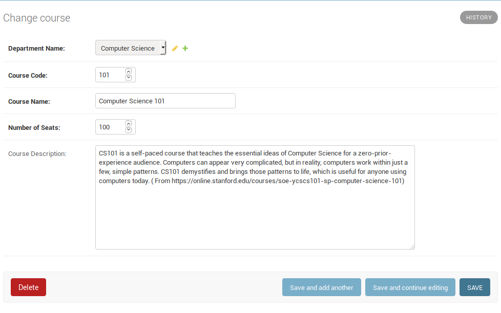

Now, we will create our other models along with department model. So, go back to our students/models.py file and add the following model classes:
class Course(models.Model):
"""
This model will store the details about courses
present in the sytem.
Primary key for this model is a combination of
course code and department code (compound key)
"""
class Meta:
db_table = 'courses'
# Compound key is defined by the keyword 'unique_together'
unique_together = (('department', 'c_code'), )
department = models.ForeignKey(Department, on_delete=models.CASCADE, verbose_name="Department Name")
c_code = models.IntegerField(verbose_name="Course Code")
c_name = models.CharField(max_length=200, verbose_name="Course Name")
c_seats = models.IntegerField(verbose_name="Number of Seats")
c_desc = models.TextField(blank=True, verbose_name="Course Description")
def __str__(self):
"""
String representation of the object.
"""
return self.c_name
class Student(models.Model):
"""
This model will store students' details.
Primary key will be the students' id.
"""
class Meta:
db_table = 'students'
ordering = ['s_id']
s_id = models.IntegerField(primary_key=True, verbose_name="Student ID")
s_first_name = models.CharField(max_length=200, verbose_name="First Name")
s_last_name = models.CharField(max_length=200, verbose_name="Last Name")
s_pic = models.ImageField(upload_to='student_pics', blank=True, verbose_name="Student's pic")
course = models.ManyToManyField(Course, blank=True, verbose_name="Courses")
def __str__(self):
"""
String representation of the student object.
"""
return "{0} {1}".format(self.s_first_name, self.s_last_name)There are a few thing to unpack here. Lets go through them one by one:
Line 11: When our primary key is a combination of more than one attributes, we define a compound key. To do so in django, we define it in the Meta class with the keyword "unique_together".
Line 13: A foreign key dependency is defined as models.ForeignKey with argument having the model that the foreign key requires.
Line 38: This is an implementation of FileField where the image is uploaded to the "student_pics" folders. Django requires installation of Pillow to work with images. So if not installed already, now would be a good time to do soi ($ pip install pillow).
Line 39: A many-to-many relationship is defined like this in Django.
We also need to define where "student_pics" folder will reside. This is defined with the help of MEDIA_URL and MEDIA_ROOT concepts. With the help of these two variables, you can define where to store the media in the project structure and also, how to form the urls in order to serve the media content.
To define this, go to the end of your settings.py file and add the following:
MEDIA_URL = '/assets/'
MEDIA_ROOT = os.path.join(BASE_DIR, '<any>', '<path>', '<you>', '<want>')BASE_DIR will be defined in the beginning of your settings.py file and corresponds to:
tutorial <-------------------BASE_DIR/
|-- manage.py*
|-- students/
| |-- admin.py
| |-- apps.py
| |-- __init__.py
| |-- migrations//
| |-- models.py
| |-- tests.py
| `-- views.py
`-- tutorial/
|-- __init__.py
|-- settings.py
|-- urls.py
`-- wsgi.pyI will set it as :
MEDIA_ROOT = os.path.join(BASE_DIR, 'assets', 'media')This way, I can store all my assets such as images, javascript files, css files(will deal with js and css later) in one place. Now, at this point, the folders will not be created but when they are (we don't need to worry about creating folders, Django will take make them when required), the folder structure will look like:
tutorial//
|-- assets//
| `-- media//
|-- manage.py*
|-- students//
| |-- admin.py
| |-- apps.py
| |-- __init__.py
| |-- migrations//
| |-- models.py
| |-- tests.py
| `-- views.py
`-- tutorial//
|-- __init__.py
|-- settings.py
|-- urls.py
`-- wsgi.pyAt this point, because we added two new models, we need to prepare our migrations and execute them:
(venv) $ python manage.py makemigrations students
(venv) $ python manage.py migrageWe also need to register our models so that we can see them in the admin interface, so we will add them in our students/admin.py file:
from django.contrib import adminfrom django.contrib import admin
from students.models import Department, Course, Student # Import our models.
# Register them.
admin.site.register(Department)
admin.site.register(Course)
admin.site.register(Student)Your admin site should now look like this:
I went ahead and added an entry each for course and student:


So now that we have saved our student with its pic, where is it? If you remember, we defined the MEDIA_URL as tutorial/assets/media/. Now, when we defined our model, we set the "upload_to" parameter in our students' picture attribute as 'student_pics'. So, our pics will be uploaded to 'tutorial/assets/media/student_pics'. Please take a moment and check if the picture was uploaded to the correct folder.
My folder structure looks like this after creating a student with a pic:
tutorial//
|-- assets//
| `-- media//
| `-- student_pics//
| `-- akshay.jpg
|-- manage.py*
|-- students//
| |-- admin.py
| |-- apps.py
| |-- __init__.py
| |-- migrations//
| |-- models.py
| |-- tests.py
| `-- views.py
`-- tutorial//
|-- __init__.py
|-- settings.py
|-- urls.py
`-- wsgi.py